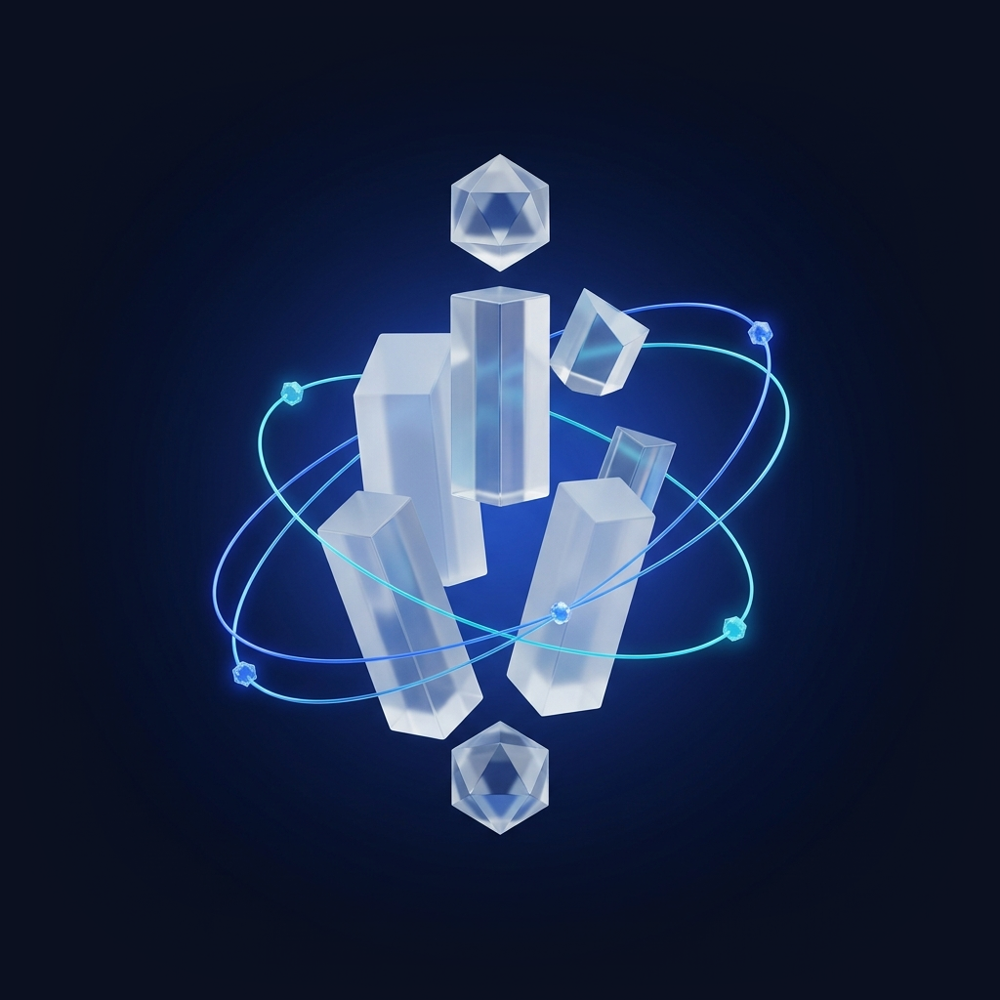
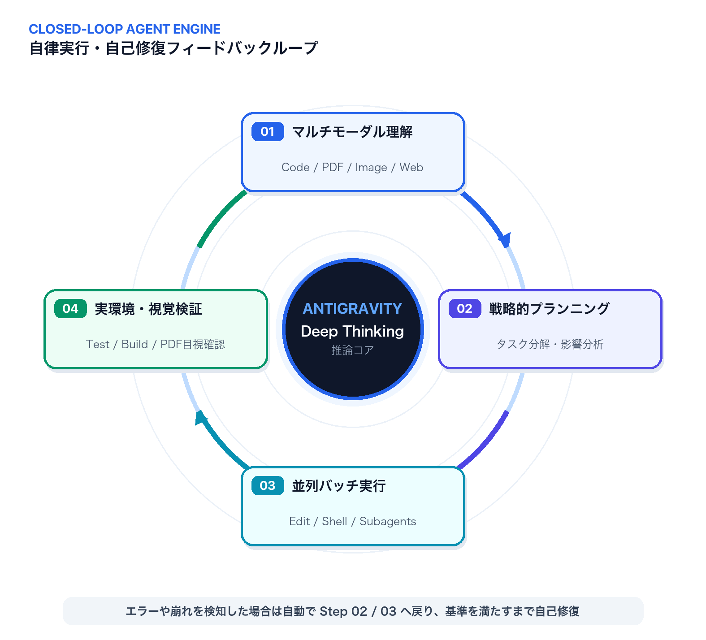
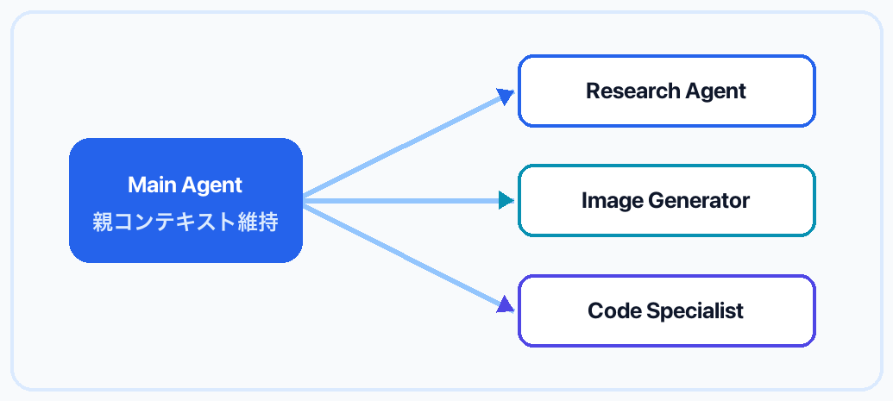
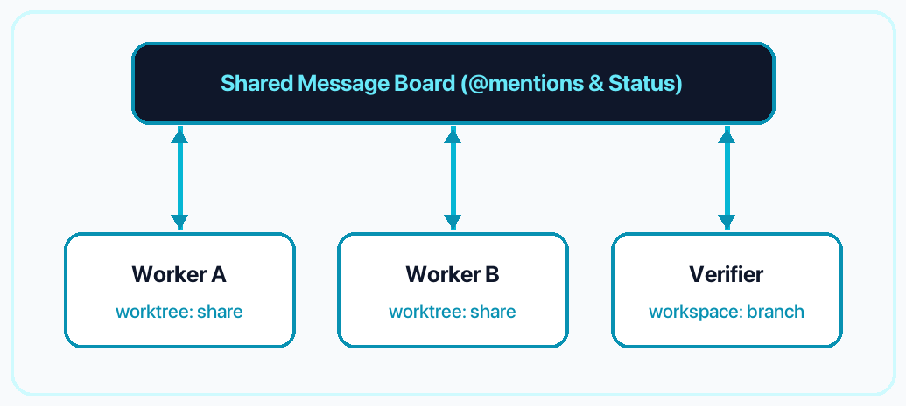
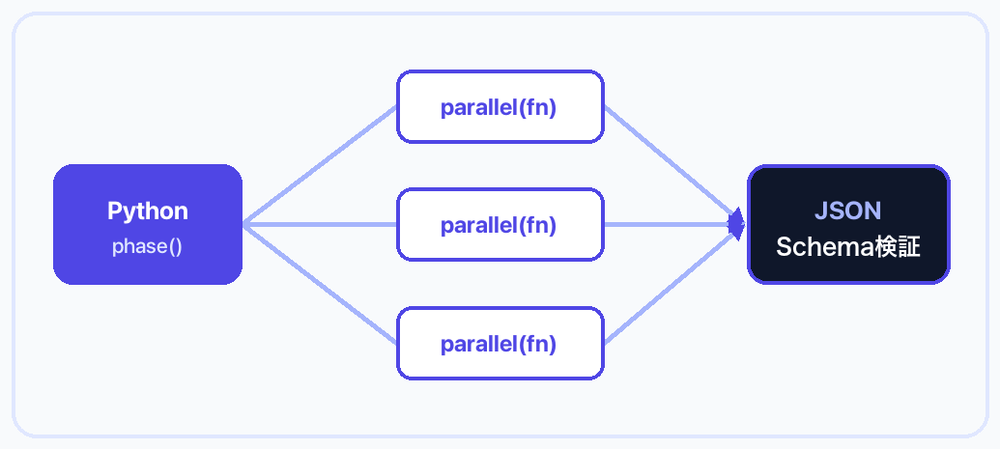

対話を超え、自律的に
創り上げるAIパートナー
深い推論・マルチエージェント協調・実環境ツール実行を統合。
構想の整理から検証済みの成果物納品までを一気通貫で完遂します。

Generated via Subagent: image-generatorテキスト断片を返す補助ツールではなく、計画・実行・自己検証までを一気通貫で担う自律型エージェントです。
Deep Thinkingで曖昧な課題を構造化し、着手前に筋の通った実行計画を策定。
マルチモーダル読解と並列ツール実行を組み合わせ、テストと目視検査で品質を担保。
マルチエージェント編成とSkills / MCP連携により、組織・プロジェクト専用に進化。
毎ターン並列で情報収集・編集・検証を実行し、課題が見つかれば自ら原因を特定して修正します。

コード全文検索に加え、画像・PDF・音声・動画・過去ログを直接読解し前提条件を正確に把握。
変更の影響範囲を事前設計。解釈が分かれる要件は構造化された選択肢（ask_question）で確認。
複数ファイル同時編集・シェル実行・Web検索を1ターンに並列集約し、最小ステップで推進。
単体テストやビルド検証に加え、生成したPDFや画像を自ら読み直して崩れや不備を自己修復。
専門調査の委譲から複数ワーカーの同時開発、大規模な定型パイプラインまで柔軟にスケールします。



対話型の企画からインライン開発、ターミナル操作、業務パイプライン組込までシームレスに連携します。
IDEに依存せず複数プロジェクトとエージェント活動を統括するデスクトップ環境
受動予測・局所指示・自律協調の3モーダルを統合したAIネイティブ開発環境
ターミナルから即起動し、開発リズムを止めず高速対話できる軽量TUI
pip install google-antigravity でCI/CDや社内基盤へ容易に組込
組織の規約・業務手順・外部ツール接続を .agents/ 配下に定義し、チーム全体でバージョン管理できます。
階層ディレクトリ単位で規約・設計方針・制約を自動適用
専門ワークフロー・手順書・スクリプトを必要時のみ注入
DB・社内API・外部SaaSをMCP標準プロトコルで接続
ツール実行前後のライフサイクルで検証処理を自動実行
関連するRules・Skills・MCP設定を単一バンドルで配布
初期状態ではスキルの「名前と概要」のみを保持し、コンテキスト消費を極小化。
SKILL.md 全文と参照ドキュメントを動的に読込み、深い専門手順を正確に遂行。
チャット上の助言にとどまらず、実務にそのまま投入できる完成ファイル群を一気通貫で生成します。
新機能開発、大規模リファクタリング、DB設計、自動テスト作成、ビルドエラー解析まで自律完遂。
Mermaid図解・カルーセル比較・GFMアラートを備えた設計書や調査書を生成し、承認UIと連携。
Subagentによる画像生成とPython/HTML組版を統合し、PPTX・PDF・Webスライドを同時出力。
バックグラウンドプロセス管理やCron/タイマー（schedule）により、継続監視や定期集計を自動化。
強力な実行能力を備えながら、組織のセキュリティ境界とガバナンスを厳格に遵守する多層防御設計です。
全社共通の Global Settings をベースラインとして適用しつつ、機密性の高いリポジトリでは Project-Level Settings（ネットワーク遮断・Sandbox強制・プロジェクト限定の Permission Grants）で厳格に上書き制御できます。
曖昧な構想の壁打ちから並列チーム開発、長時間タスクの完遂まで最適なワークフローを即座に起動できます。
対話型インタビューで設計判断の論点を洗い出し、実装着手前に精緻なステップ計画とMermaid図解付きの設計Artifactを合意。
深い推論・多角的な仮説検証・厳密な自動テスト実行を組み合わせ、場当たり的な修正ではなく根本原因の解決と品質保証を完遂。
自律エージェントのチーム（Swarm）を編成し、分離されたワークスペース上で各モジュールの実装・テスト・レビューを並列推進。
ゴール基準を満たすまで粘り強く自走する長期実行モードや、Cronスケジュールによる定期チェック・レポート生成で運用負荷を削減。
Antigravity は、あなたの意図を深く理解し、検証済みの成果物まで走り切るパートナーです。
まずは目の前の1タスクから、自律型AIとの新しい協働を始めましょう。
/grill-me や /plan で設計の論点をすり合わせ
/boost や /teamwork で実装から検証まで一気通貫
/learn や SKILL.md でプロジェクト標準として定着